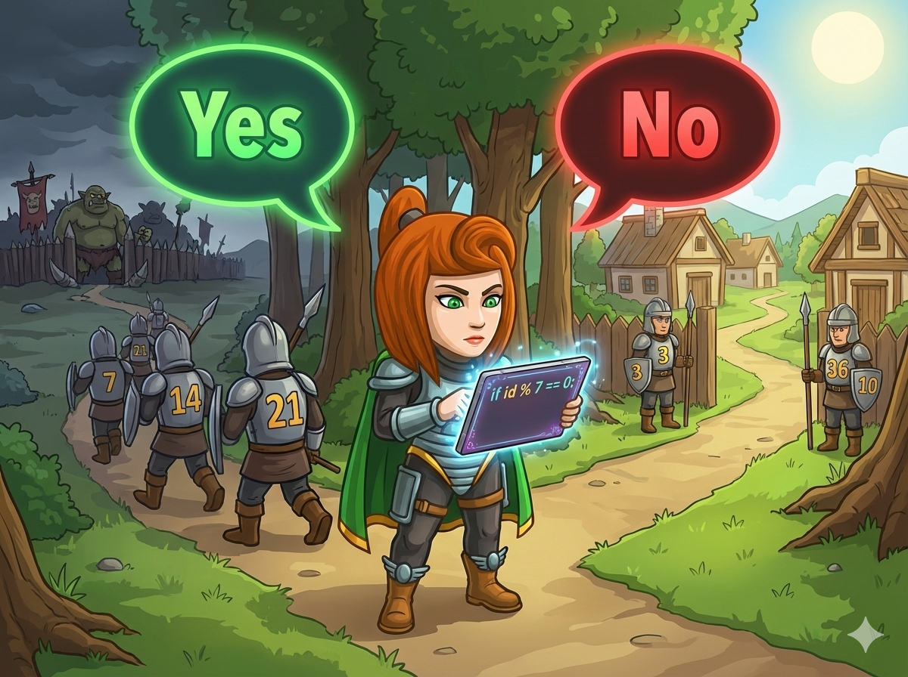

森林旁的村庄 🏕️ 遇到了危机！食人魔营地即将发动袭击 ⚠️。 村庄首领紧急召集了所有士兵。每位士兵都有一个编号（1, 2, 3...）。
为了灵活作战，首领宣布了一条特殊的规则：
👉 只有编号是 7 的倍数 的士兵，才需要出征！
👉 其他士兵留在村庄保护村民。
👉 任务： 编写程序，读入士兵的编号，判断他是否需要出征。 如果是，输出 Yes；否则输出 No。
如何判断一个数是不是 7 的倍数 呢？
很简单，只要看看它 除以 7 之后，余数是不是 0 就行啦！
a % 7 == 0
如果 a 除以 7 的余数是 0，
那么 a 就是 7 的倍数。
士兵们正在等待指令，快写代码帮首领筛选出征的勇士！
#include <iostream> using namespace std; int main() { // 1️⃣ 声明变量 a (士兵编号) int a; // 2️⃣ 输入编号 cin >> a; // 3️⃣ 判断是否为 7 的倍数 // 也就是判断 a 除以 7 的余数是否为 0 if (a % 7 == 0) { cout << "Yes"; // 余数是0，需要出征 } else { cout << "No"; // 余数不是0，留守村庄 } return 0; }
# 1️⃣ 输入：读取编号，存入变量 a a = int(input()) # 2️⃣ 判断倍数 # a % 7 == 0 表示 a 能被 7 整除 if a % 7 == 0: print("Yes") # 是倍数，出征！ else: print("No") # 不是倍数，留守。
⭐ 举一反三： 如果首领改成“3的倍数出征”，只需要把代码里的 7 改成 3 就可以啦！